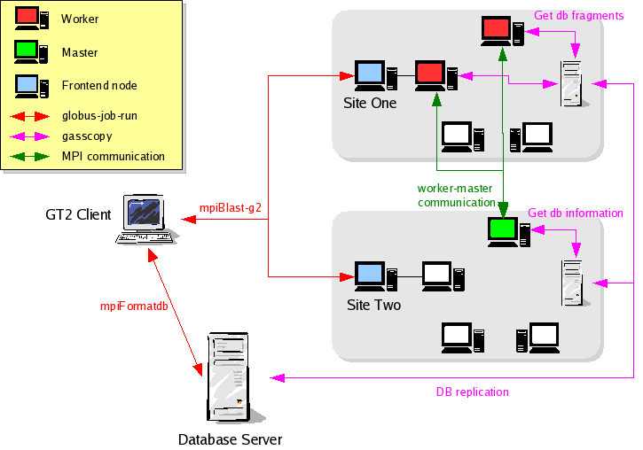

Testing of SSH connection
Testing of globus-job-run
% globus-job-run '<contact-string>' /bin/hostname from ASCC site (pragma001.grid.sinica.edu.tw)
Testing of globus-url-copy
% globus-url-copy file:///home/hclee/ecoli.nt gsiftp://<remote_site>/tmp/ecoli.nt from ASCC globus client (pragma001.grid.sinica.edu.tw)
Building mpiBLAST-g2 on each site (require $GLOBUS_LOCATION and installation path of NCBI Toolbox)
% export CVSROOT=:pserver:hclee@bit139.sinica.edu.tw:/data/cvsrepos
% cvs checkout mpiBlast-g2
% cd mpiBlast-g2
% ./configure --prefix=/home/hclee/opt/mpiBlast-g2 --with-ncbi=<NCBI_LOCATION>; make; make install
% vi ~/opt/mpiBlast-g2/etc/mpiblast-gasscopy.conf (Edit configuration file)
Config file example:
gsiftp://pragma001.grid.sinica.edu.tw
/home/hclee/db
/tmp
% mkdir ~/db (Create a database folder)
Single site mpiBLAST job submission (job submission from pragma001.grid.sinica.edu.tw through blast-g2.submit)
Multiple site mpiBLAST job submission (job submission from pragma001.grid.sinica.edu.tw through blast-g2.submit)
|
Site |
Test 1 |
Test 2 |
Test 3 |
Test 4 |
Test 5 |
Test 6 |
|---|---|---|---|---|---|---|
|
ume.hpcc.jp (AIST) |
PASS |
PASS |
PASS |
PASS |
PASS |
PASS |
|
pragma001.grid.sinica.edu.tw (ASCC) |
PASS |
PASS |
PASS |
PASS |
PASS |
PASS |
|
marlin.bii.a-star.edu.sg (BII) |
PASS |
PASS |
PASS |
PASS |
PASS |
PASS |
|
jupiter.gridcenter.or.kr (KISTI) |
|
|
|
|
|
|
|
rocks10.sdsc.edu (SDSC) |
PASS |
PASS |
PASS |
PASS |
PASS |
PASS |
Database: ecoli.nt (~5MB, 2 db fragments)
Query: >gi|1786181|gb|AE000111.1|AE000111 Escherichia coli K-12 MG1655 section 1 of 400 of the complete genome (720 bps)
Approximate Elapsed Time ~ 1 min.
Database: drosoph.nt (~ 120MB, 32 db fragments)
Query: >gi|24638835|ref|NC_004353.1| Drosophila melanogaster chromosome 4, complete sequence (1.2 Mbps)
Approximate Elapsed Time ~ 10 mins.
Database: est_human (~4GB, 64 db fragments)
Query: >gi|51475310|ref|NT_029490.4|Hs21_29649 Homo sapiens chromosome 21 genomic contig (500 Kbps)
Approximate Elapsed Time ??
Preprocess:
Before running blast alignment, raw database should be formatted for use. It can be done by submitting a mpiFormatdb job to Database Server. Unlike normal formatdb program, mpiFormatdb will split single database to multiple fragments (databases) and generate a spec. file for merging results.
Running mpiBlast:
The mpich-g2 job will collaborate nodes from different sites to run mpiBlast-g2 program. The nodes consist of one master and several workers. At runtime, each worker node will fetch a db fragment from either Database Server or local replication via gasscopy then do the normal blast. After returing results to master node, worker will iterate the “fetch-run-return” step until all fragments are done with blast alignment. Finally, the master node will merge resutls and return the final report to client.
